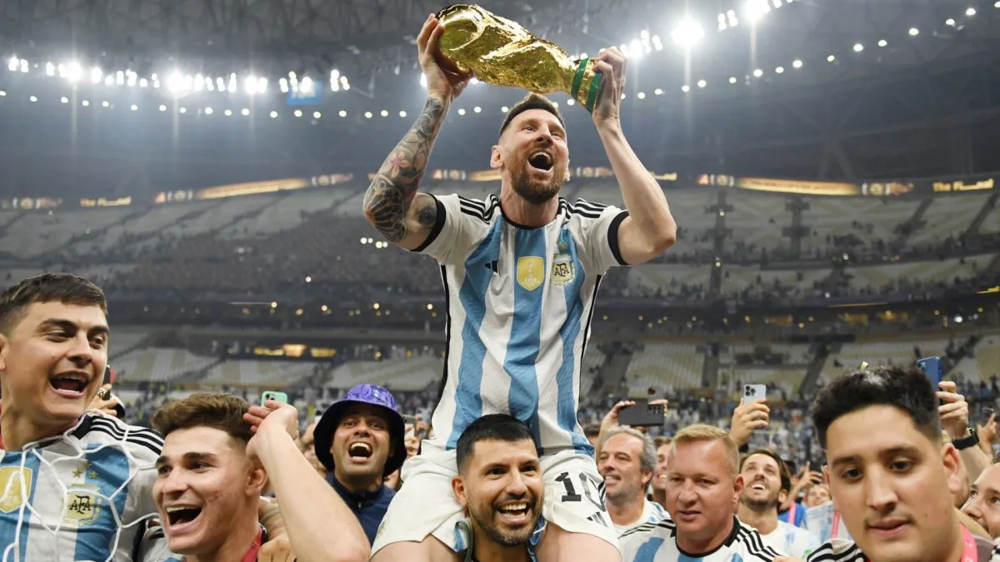
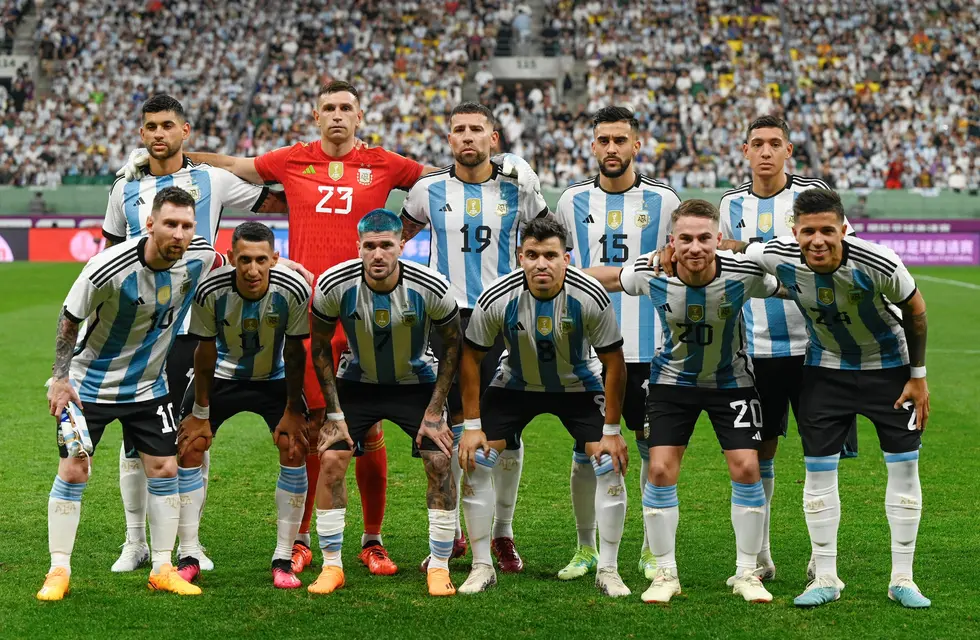
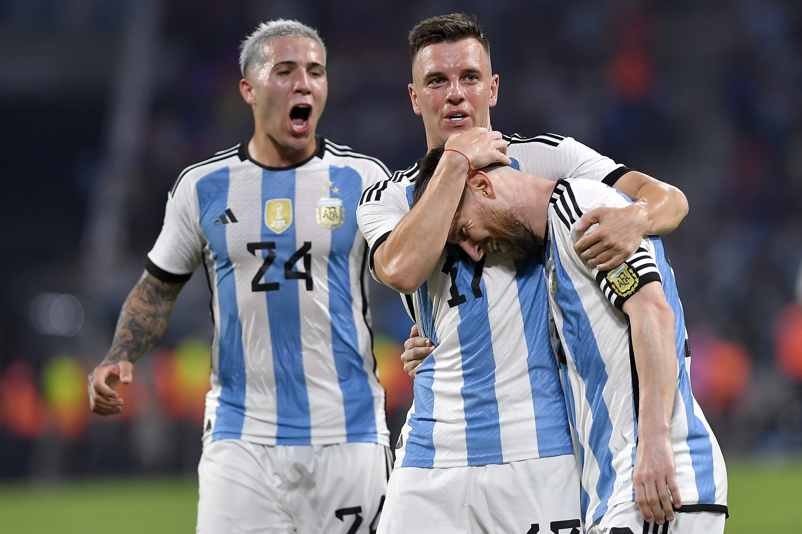
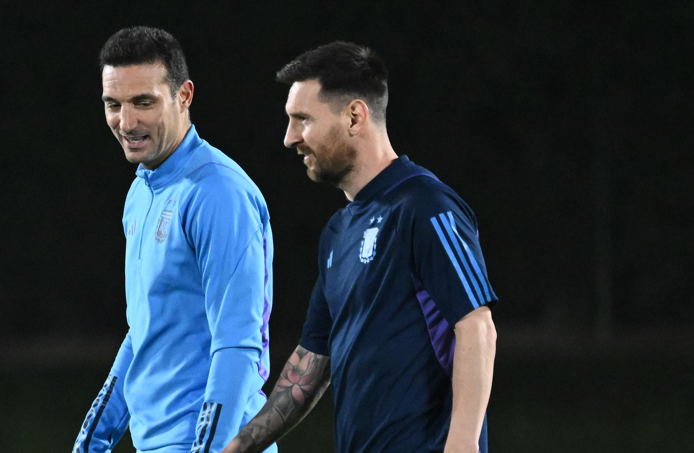
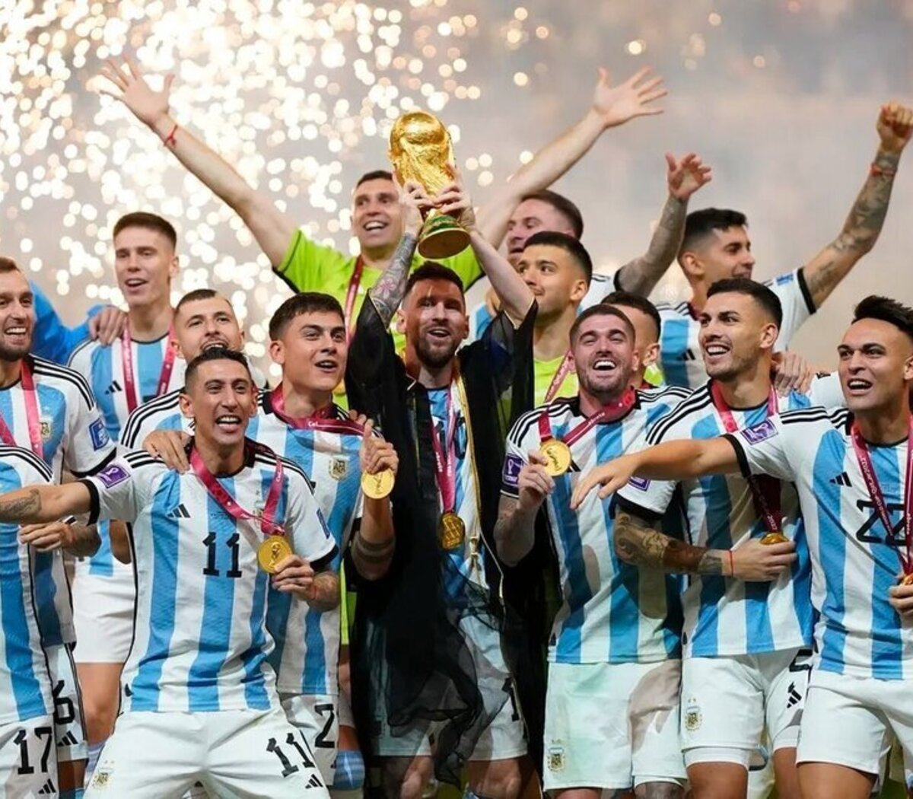

La selección masculina de fútbol de Argentina es el equipo formado por jugadores de nacionalidad argentina que representa a la Asociación del Fútbol Argentino (AFA) en las competiciones oficiales organizadas por la Confederación Sudamericana de Fútbol (Conmebol), ente rector de ese deporte en América del Sur, y por la Federación Internacional de Fútbol Asociación (FIFA). Es campeona vigente a nivel confederativo, interconfederativo y mundial.Es considerada como una de las grandes potencias del fútbol masculino internacional, siendo, a nivel de selecciones mayores, el país con más títulos oficiales ganados de la historia (22) y también con más subcampeonatos (21).En total, ganó cincuenta y cuatro títulos internacionales oficiales, sumando los conseguidos a nivel de selecciones principal, olímpica y de juveniles.
Actualmente, se ubica en el tercer lugar de la tabla histórica general de la Copa del Mundo. La ha conquistado en tres ocasiones: siendo el primer título de local en 1978, el segundo en México 1986 y el restante en Catar 2022.Además, fue finalista en otras tres ediciones: en Uruguay 1930, en Italia 1990 y en Brasil 2014. A nivel continental, ocupa el primer lugar de la clasificación histórica de la Copa América, y es junto a Uruguay el seleccionado que más veces se adjudicó el trofeo, ganándolo en quince ocasiones (1921, 1925, 1927, 1929, 1937, 1941, 1945, 1946, 1947, 1955, 1957, 1959-I, 1991, 1993 y 2021), y el que más subcampeonatos logró en la competición, con catorce (1916, 1917, 1920, 1923, 1924, 1926, 1935, 1942, 1959-II, 1967, 2004, 2007, 2015 y 2016). También, en 1992 se adjudicó la Copa Rey Fahd, renombrada a partir de 1997 como Copa FIFA Confederaciones, en tanto que en 1995 y 2005 disputó el partido definitorio de dicho torneo.